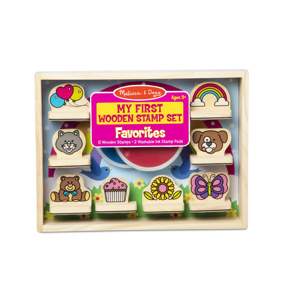
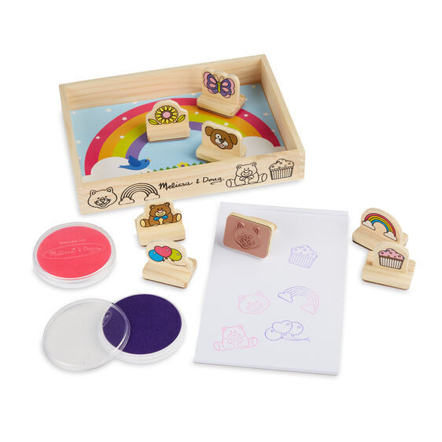
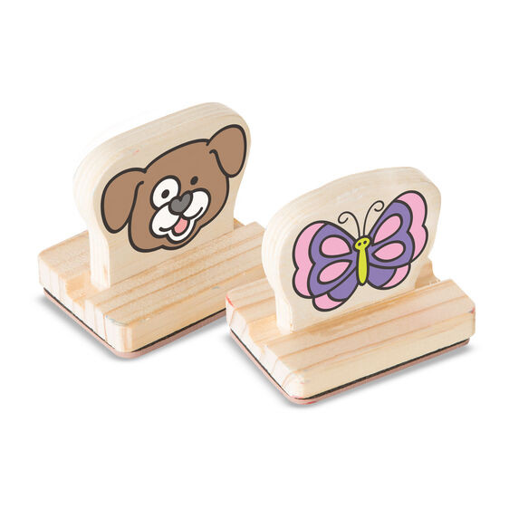

My First Wooden Stamp Set - Favorites
Arts and Crafts
R375Favorites-themed wooden stamp set with flat, easy-to-grasp wooden handles a colorful picture on each that shows what's on the stamp Includes 8 wooden stamps featuring balloons, rainbow, kitten, puppy, teddy bear, cupcake, flower, and butterfly 2 different-colored washable ink pads (pink and purple) with durable covers to help prevent ink from dying out All supplies store in a wooden crate for easy cleanup; stamping helps kids develop hand-eye coordination and encourages storytelling and imaginative play Makes a great gift for toddlers to preschoolers, ages 3 to 5, for hands-on, screen-free play Ages 3+; 11
Enquire about this product

My First Wooden Stamp Set - Favorites at Kids Corner KZN
My First Wooden Stamp Set - Favorites is part of our Arts and Crafts collection. Kids Corner KZN stocks toys for learning, pretend play, creative play, gifting and everyday childhood discovery in South Africa.
Browse more Arts and Crafts toys